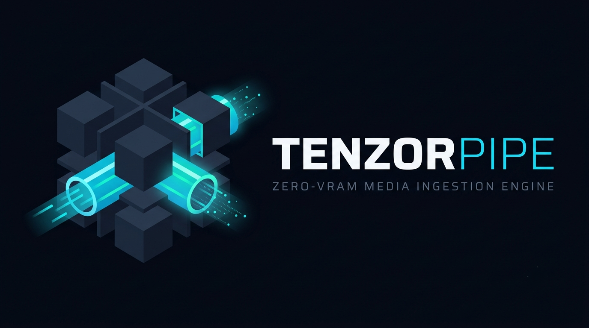

TenzorPipe turns MP4 (H.264/AAC) and WAV into synchronized RGB and Log-Mel tensors in batched Apache Arrow IPC — decoded on the CPU, with no GPU memory, no FFmpeg runtime dependency, and byte-identical output every run.
Narrated, 25 seconds. Every figure on screen was measured on the machine that produced the video.
One 20-second 1080p30 H.264 clip at 8 Mb/s, Intel i5-14400F + RTX 5060 (8 GB) under WSL2, 50 measured iterations per contender. Full method, raw numbers and caveats: BENCHMARKS.md.
| Metric | TenzorPipe 0.3.0 | FFmpeg pipe | NVIDIA DALI | TorchCodec (CUDA) |
|---|---|---|---|---|
| First-pass ingest | 646 ms | 554 ms | 442 ms | 276 ms |
| Every later training epoch | 2.8 ms Arrow re-read | decode again | decode again | decode again |
| GPU memory during decode | 0 MiB | 0 MiB | 822 MiB | 650 MiB |
| Output reproducibility | 1,056 / 1,056 byte-identical | differ from each other by colour conversion and resampling | ||
TenzorPipe is not the fastest first pass — GPU decoders are. It wins from the second epoch onward, and it never takes VRAM away from your model.
# 1. install (Linux x86-64, CPython 3.9+)
pip install tenzorpipe
# 2. decode once into Apache Arrow
python -c "import tenzorpipe as tp; tp.ingest('clip.mp4', 'clip.tenzor')"
# 3. memory-map tensors for every epoch
python -c "import tenzorpipe as tp; d = tp.load('clip.tenzor'); print(len(d), d[0]['video'].shape)"224×224 RGB CHW float32 in [-1, 1] and 64-band Log-Mel, one row per 0.5 s epoch.
OpenH264 and the AAC decoder are compiled in. No FFmpeg, no CUDA, no system codecs.
Same bytes on every worker count, verified against the previous release on 1,056 cases.
TenzorPipe is released under the Business Source License 1.1. It converts to Apache-2.0 on 16 September 2030.